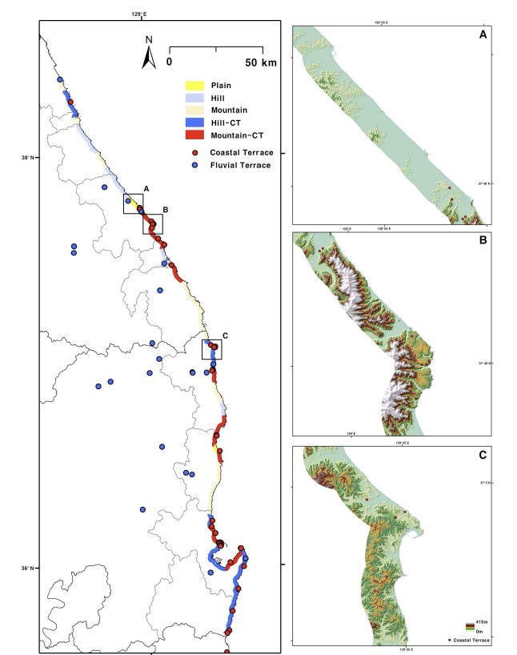
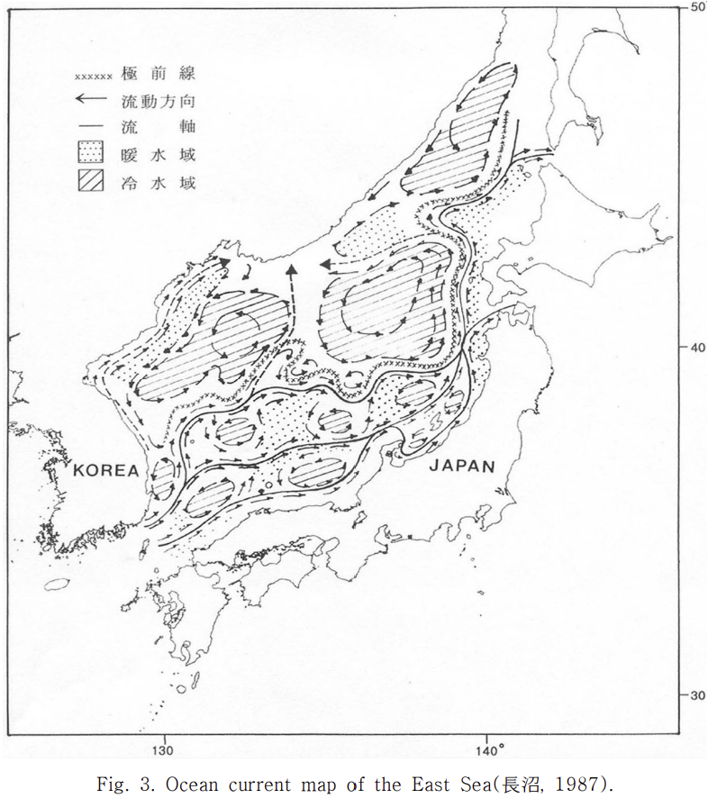

해양 정보
▶ 지리적 특성
지형
중부 해안 역은 대부분 저기복, 저고도의 평지 혹은 구릉으로 이루어져 있다. 남부부터는 산지와 해안 지역 사이의 거리가 짧기 때문에 주변 지형보다 고기복, 고고도의 산지로 이루어져 있는 편이다. 삼척, 영덕과 같은 동해안의 남부 지역에서는 비교적 높은 고도를 보이며, 양양과 속초가 속해있는 북부 지역에서는 비교적 낮은 고도가 나타난다. 북부 지역의 고도가 낮은 이유는 그 지역에 넓게 분포하고 있는 황성암류 암석과 추억층의 존재로 추정되고 있다. 동해안 지역을 구성하고 있는 암석은 변성암, 화성암, 퇴적암 등 크게 13가지의 유형으로 분류할 수 있다.
[동해안의 지형 경관 분포]
기후
겨울에는 서북풍의 영향으로 동해 해상에서 습기가 유입이 되어 눈이 많이 내린다. 특히, 강원도 영동 지방은 겨울철에 폭설이 자주 발생하는 것으로 유명하다. 여름철에는 차가운 한류의 영향으로 해풍이 강하게 불어 기온이 내륙 평균보다 낮고, 일교차가 크다는 특징이 있다. 연교차와 일교차가 큰 편이며 태백 산맥의 영향으로 기온 및 습도 분포가 뚜렷하게 나뉘어지는 특징도 있다.
해양
동해는 해안선이 타 해안보다 단조로우며 섬이 거의 없고, 해안 단구가 두드러지게 발달해있다. 급격한 해저 지형을 가지고 있으며 수심이 깊다. 동해안은 일본 열도가 막고 있어 환경의 변화가 빠르며 난류가 북상하고 한류가 남하하여 두 해류가 만나는 중간 해역이기도 하다. 죽변 연안의 평균 수온은 동계에 7℃ 이고, 하계에 22℃ 이다. 동해 남부 연안의 평균 수온은 동계에 11℃, 하계에 23℃ 이다.
[동해안의 해류 흐름]
▶ 생태적 특성
식물
연안 어장에 서식하는 많은 양의 해조류가 수온 상승과 찾은 호우, 환경 오염의 영향 등으로 생산량이 급격하게 감소하고 있다. 동해안 지역은 기후와 지형에 따라 각기 다른 식물 분포를 보인다. 강원도 지역에서는 소나무 숲이 넓게 분포하며, 특히 염분과 바람에 강한 특성을 가져 바닷가 근처에서도 잘 자리는 해송 종이 더 많이 분포한다. 여기서 더 내려가 포항, 울산 지역으로 가면 난류의 영향을 받아 겨울에도 비교적 따뜻한 기온이 유지가 되기 때문에 참나무류, 산갈나무 등 활엽수 종류도 보인다. 주로 상록활엽수와 낙엽활엽수가 섞인 혼합 산림이 나타난다. 여기서 더 남쪽으로 내려갈수록 기온이 상대적으로 온화해지면서, 사철 푸른 동백나무 등 난대성 식물도 일부 분포한다.
동물
동해안은 난류와 한류의 접점에 있어 황금 어장이 형성되어 해양 생태계가 다양하다. 최근 지구 온난화의 영향으로 과거 남해안 지역에 서식하던 온대성, 아열대성 생물이 동해안에 대량 유입되고 있는 추세이다. 포유류로는 겨울철에 물개류가 동해 북부 지역에서 관찰 되기도 하고, 산지에서는 눈과 추위에 강한 내한성 동물들 (산양, 담비) 같은 동물들도 출현한다. 동해안 해안선과 섬 지역은 철새 이동하며 거쳐가는 곳들 중 하나기에 때문에 겨울 철에는 겨울 철새 (흑기러기, 청둥오리), 여름 철에는 여름 철새 (괭이갈매기, 바다제비) 등이 서식한다고 알려져 있다.
▶ 동해안 고유 특성
동해안은 해안에서 조금만 나가도 수심이 급격해지는 급경사 대륙붕 구조를 가지고 있다. 또 하나의 특징은 난류와 한류가 교차하는 지역이라는 점이다. 북쪽에서는 북한 한류, 남쪽에서는 대마난류가 흘러 서로 교차하며 다양한 해양 생태계가 형성이 된다. 이 때문에, 동해는 다른 해안 지역 보다 어업 자원이 풍부하고, 계절별로 잡히는 어종이 훨씬 더 다양하다는 장점이 있다. 또, 동해는 바다와 산이 매우 가까이 맞닿아 있다는 특징이 있다. 이에 따라 지상과 해양 생태계가 매우 가까이 공존하여, 가까운 지역이라고 동식물 분포가 급격히 달라진다는 특징이 있다.
▶ 통계 정보
오늘 수온
월평균 수온
현재 데이터가 쌓이는 중으로 그래프가 안 나올 수 있습니다.